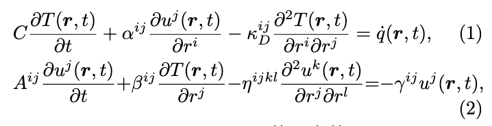
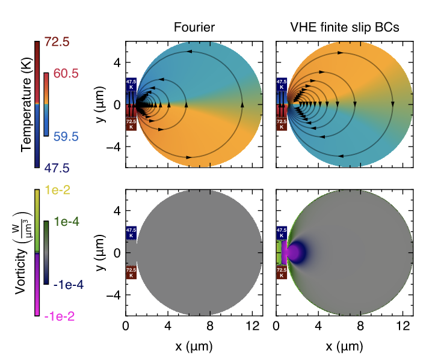

Simoncelli Group
Simulating viscous heat transfer in extreme thermal conductors through tailored geometries and boundary conditions.

My work builds upon the theoretical framework of the Viscous Heat Equations (VHE), a generalization of Fourier's law that captures hydrodynamic phonon transport. In extreme thermal conductors like graphite, heat can flow much like a viscous fluid.
A critical variable in these simulations is temperature dependence. The transition between diffusive and hydrodynamic regimes is highly sensitive to the operating temperature (typically within the cryogenic 60–100 K range). I analyze how thermal viscosity and phonon scattering rates evolve across these temperature gradients, fundamentally altering the material's thermal dissipation.

In the hydrodynamic regime, the macroscopic geometry of a device—and the physical boundary conditions (BCs) at its edges—dictate thermal flow just as pipe geometry dictates fluid flow. My research focuses on simulating how specific geometric constraints induce non-diffusive phenomena, such as steady-state heat vortices and viscous heat backflow.
In collaboration with experimentalists at the University of Michigan, I model various boundary conditions, paying special attention to slip/lubrication dynamics at the interfaces. By fine-tuning these BCs and geometric parameters, we can theoretically amplify temperature resonances and actively control heat hydrodynamics in physical devices.
